|
Jiting Cai | 蔡霁廷 I am Jiting Cai, a Master's student in Robotics (MSR) at Carnegie Mellon University's Robotics Institute, working with Prof. Wenshan Wang and Prof. Sebastian Scherer at the AirLab. Previously, I received my bachelor's degree in Computer Science and Technology from Shanghai Jiao Tong University, where I worked with Prof. Yong-Lu Li and Prof. Cewu Lu on visual reasoning. I was also fortunate to complete summer internships at UMass Amherst and the MIT-IBM Watson AI Lab in 2024, working closely with Prof. Chuang Gan on simulated world generation and robot manipulation. My research interests lie at the intersection of computer vision, robotics, and multimodal learning. I am particularly interested in robot perception, including SLAM and dense correspondence, multimodal representation learning, and world models for robotics. Email / CV / Google Scholar |

“君子不器” |
Selected Publications
* indicates equal contribution, † indicates corresponding author
|
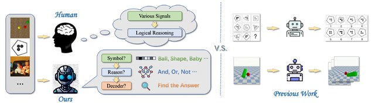 |
Take A Step Back: Rethinking the Two Stages in Visual Reasoning
Mingyu Zhang*, Jiting Cai*, Mingyu Liu, Yue Xu, Cewu Lu, Yong-Lu Li† ECCV, 2024 arXiv We rethink visual reasoning as task-specific symbolization followed by shared reasoning, improving cross-domain generalization across 2D and 3D tasks. |
|
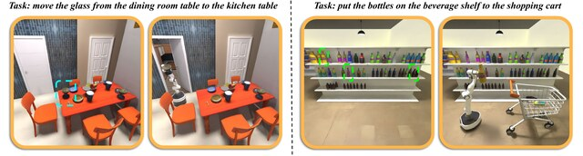 |
Architect: Generating Vivid and Interactive 3D Scenes with Hierarchical 2D Inpainting
Yian Wang*, Xiaowen Qiu*, Jiageng Liu*, Zhehuan Chen, Jiting Cai, Yufei Wang, Tsun-Hsuan Wang, Zhou Xian, Chuang Gan† NeurIPS, 2024 arXiv / project page Architect generates complex, realistic, and interactive 3D environments through hierarchical 2D diffusion inpainting and depth estimation. |
|
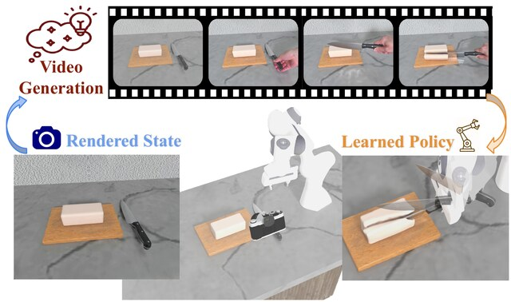 |
LuciBot: Automated Robot Policy Learning from Generated Videos
Xiaowen Qiu*, Yian Wang*, Jiting Cai*, Zhehuan Chen, Chunru Lin, Tsun-Hsuan Wang, Chuang Gan† In submission arXiv / project page LuciBot uses generated videos to obtain rich supervision, including object poses, segmentation, and depth, for learning robot policies in simulation. |
|
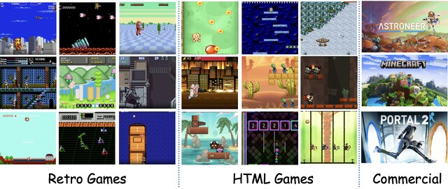 |
IPR-1: Interactive Physical Reasoner
Mingyu Zhang*, Lifeng Zhuo*, Tianxi Tan, Guocan Xie, Xian Nie, Yan Li, Renjie Zhao, Zizhu He, Ziyu Wang, Jiting Cai, Yong-Lu Li† CVPR, 2026 arXiv / project page IPR-1 uses interactive world-model rollouts and physics-centric action codes to improve physical reasoning and policy transfer across unseen environments. |
|
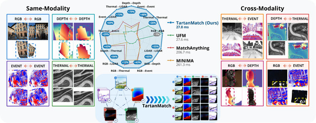 |
TartanMatch: Towards Universal Dense Correspondence Across Modalities
Hyeokjoon Kwon*, Jiting Cai*†, Ruogu Li*, Kritan Bhandari, Geethika Hemkumar, Parv Maheshwari, Yuheng Qiu, Yuchen Zhang, Sebastian Scherer, Wenshan Wang In submission TartanMatch learns unified dense correspondence across RGB, depth, event, thermal, and LiDAR modalities with a single model. |
|
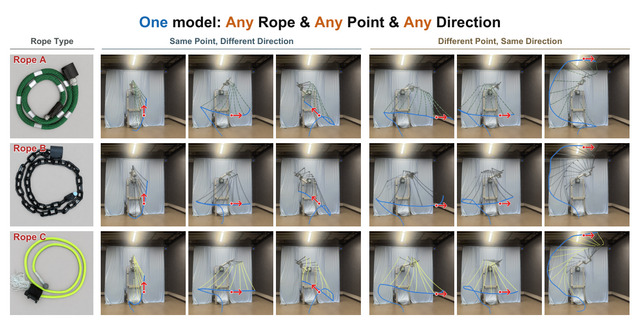 |
Point It, Strike It: Direction-Conditioned Dynamic Manipulation of Deformable Linear Objects
Yi Yang*, Xiang Fei*, Lehong Wang*, Zilin Dai, Ruogu Li, Jiting Cai, Liyao Chang, Xinyi Yang, Henry Kou, Ruijie Fu, Lu Li†, Howie Choset In submission We introduce 4D goal-conditioned rope striking with DeformX 2.0, TRACE, a flow-matching policy, and RECAP calibration for direction-aware manipulation across diverse ropes. |
Selected Awards
- Outstanding Graduate, Shanghai Jiao Tong University, 2025
- Yang Yuanqing Undergraduate Honors Scholarship (five recipients per year), Shanghai Jiao Tong University, 2024
- Merit Student (top 5%), Shanghai Jiao Tong University, 2022, 2024
- Academic Excellence Award Scholarship — A Level (top 3%), Shanghai Jiao Tong University, 2022
Misc
- Music: I enjoy playing the flute. 🎵🎶
- Entertainment: escape rooms. 🧩🔐
- Games: I enjoy playing League of Legends and Red Alert. 🎮🕹️
- Food: I love exploring different cuisines. Interesting fact: my hometown, Guangzhou (广州), is famous for its rich food culture. I especially love Chaoshan (潮汕) beef hot pot. 🍲🥩🥢
Food adventures 🍽️
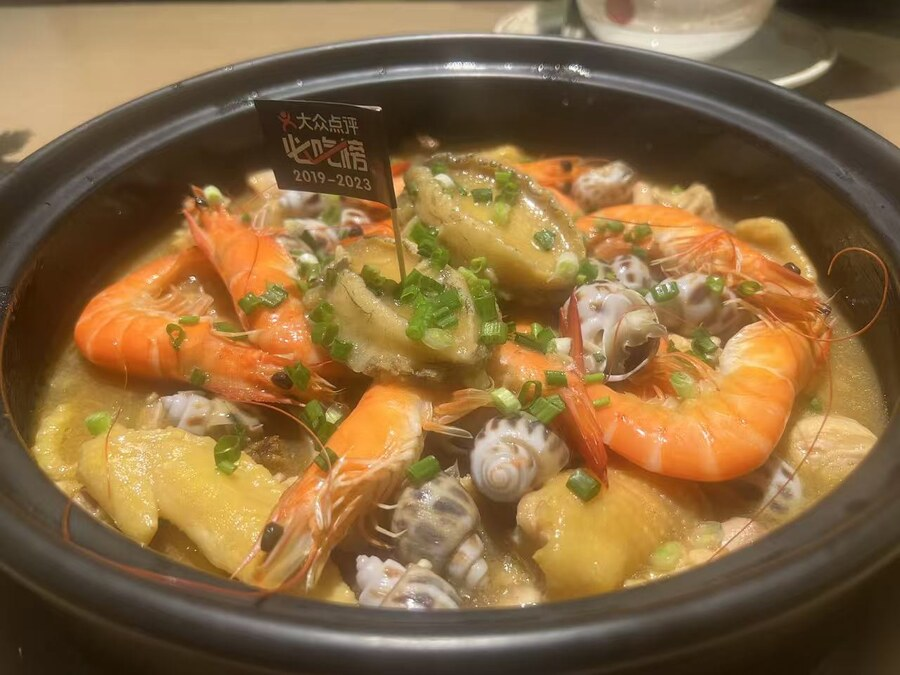
A Guangzhou specialty.
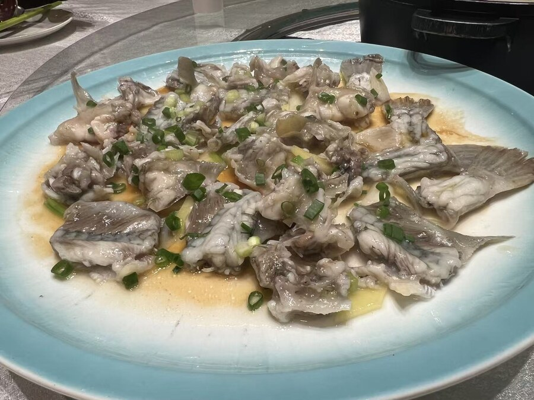
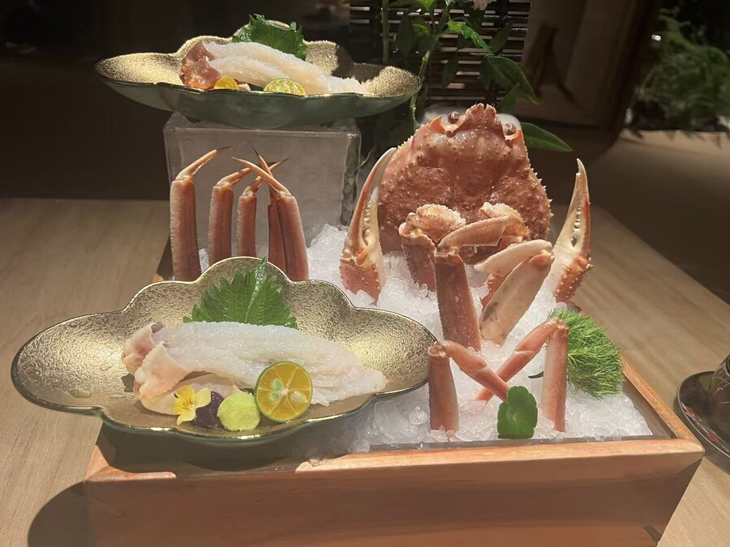
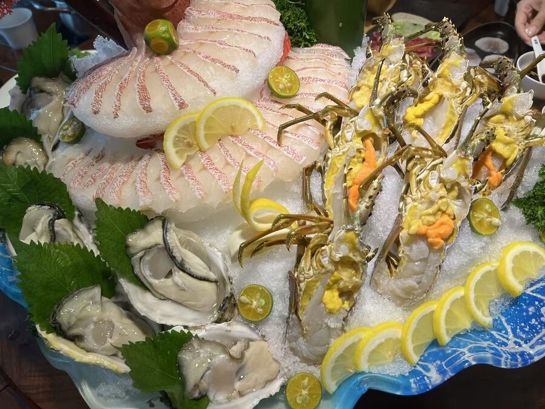
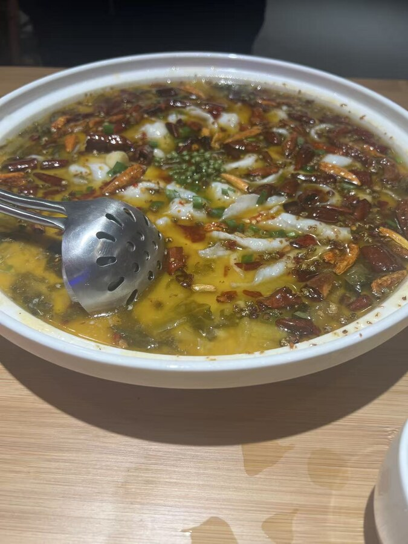
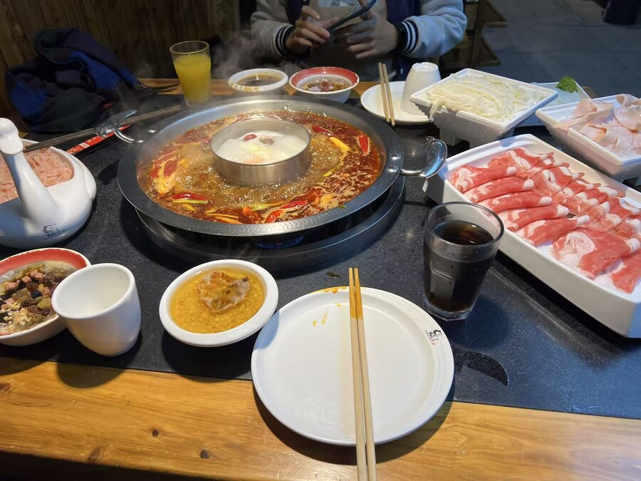
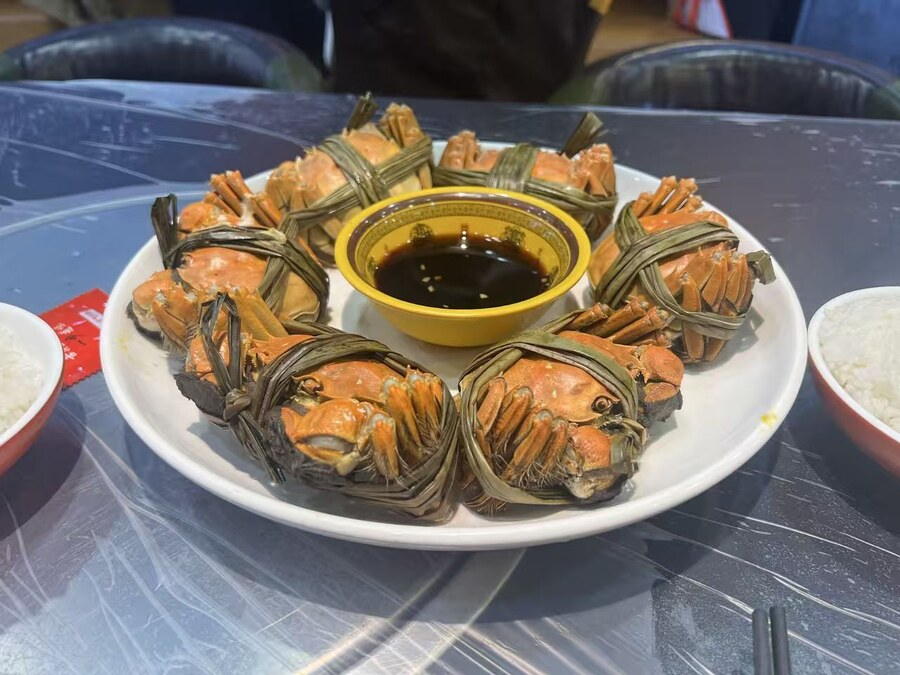

Thai cuisine in Pittsburgh.
Chaoshan beef hot pot (潮汕牛肉火锅)
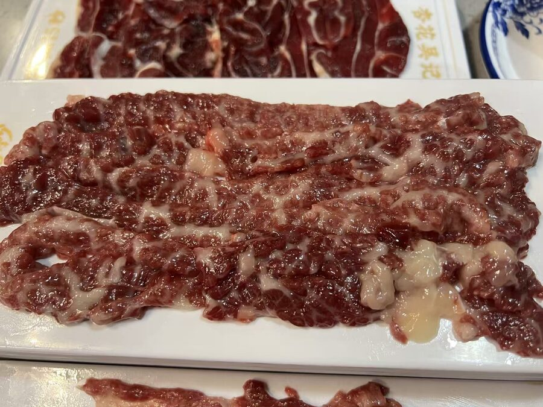
Beautifully marbled and melt-in-your-mouth.
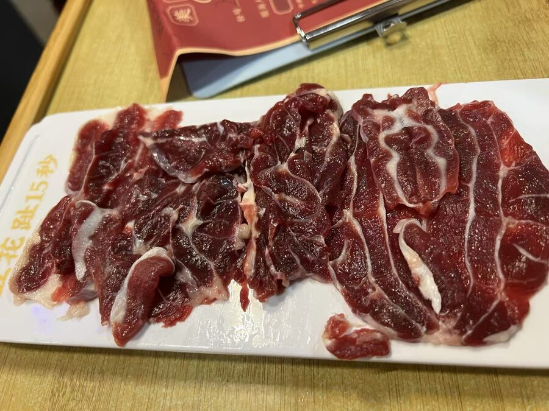
Crisp and tender.
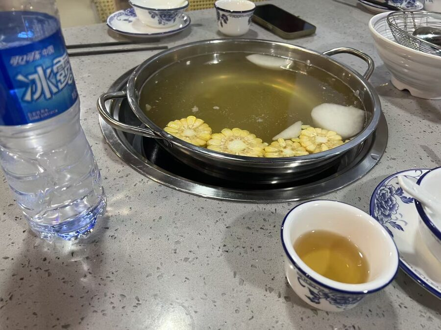
Sushi

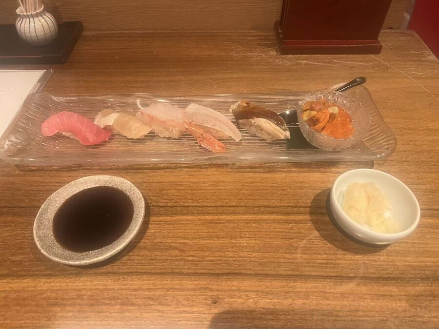
German cuisine
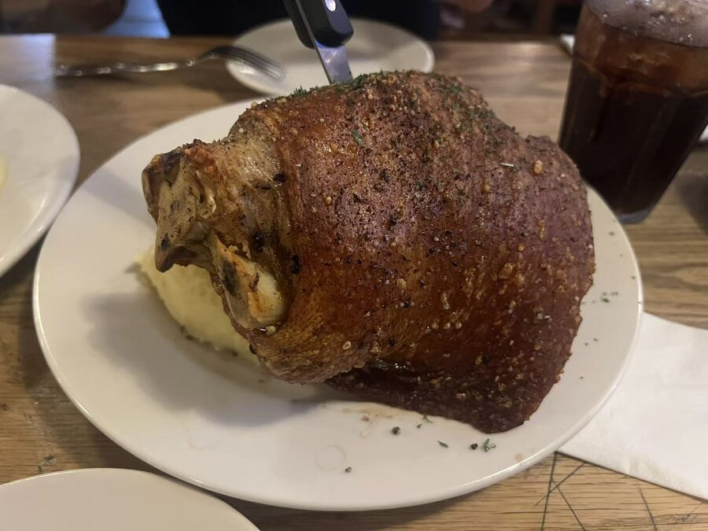
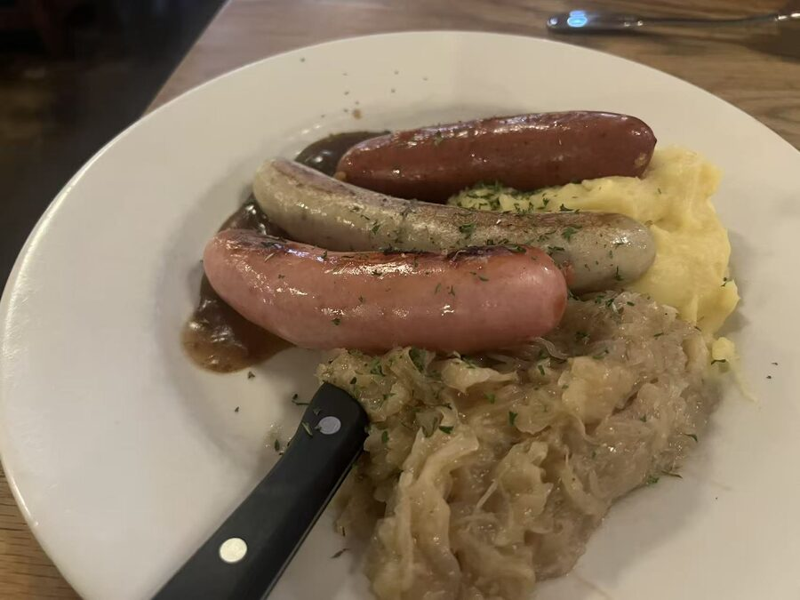